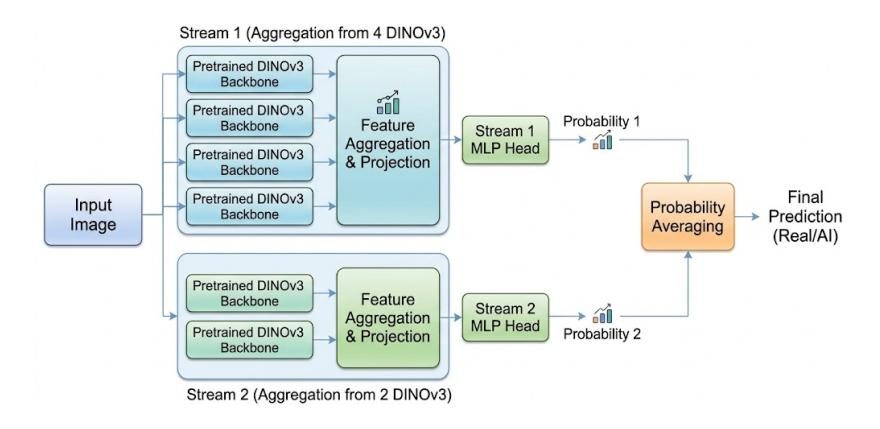
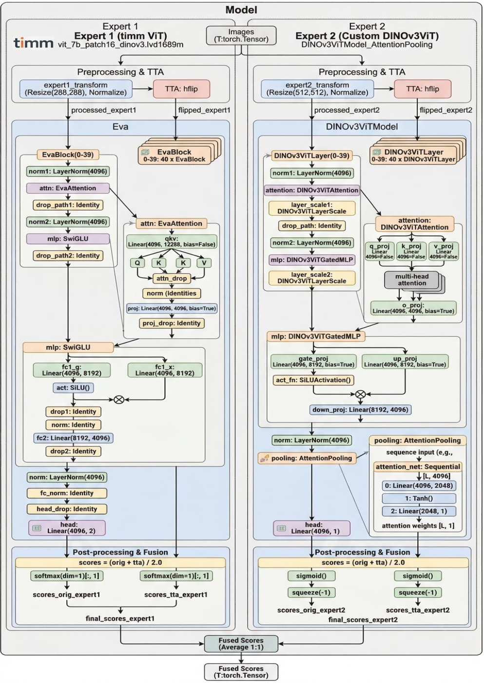
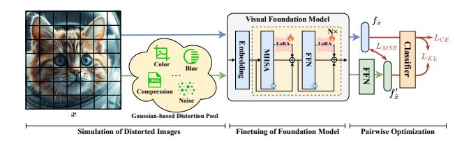
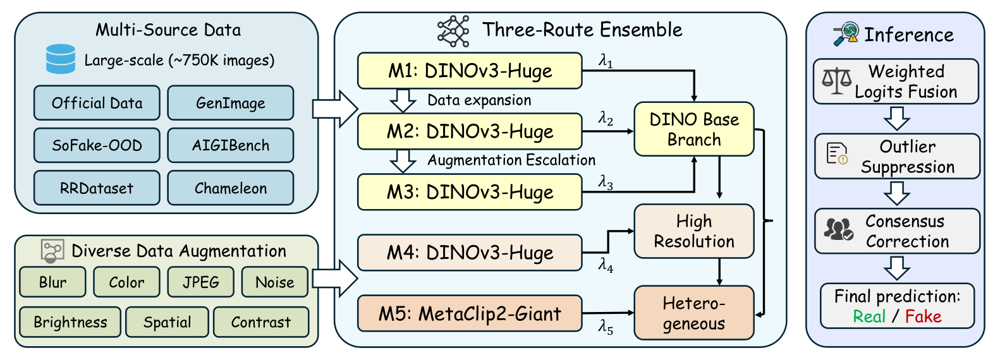
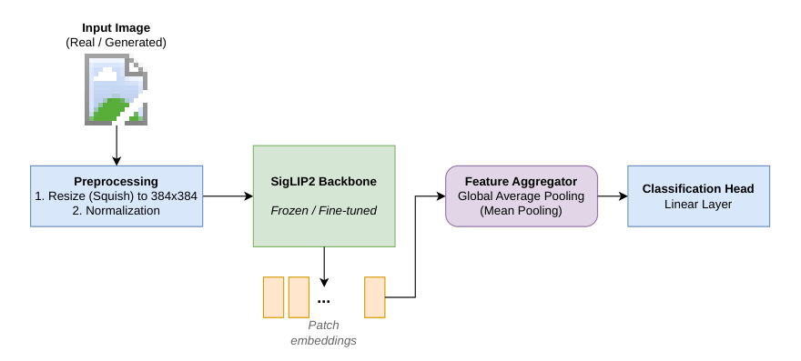
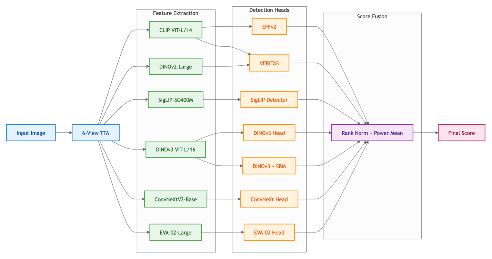
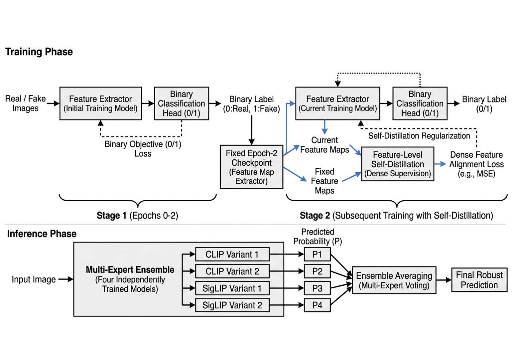
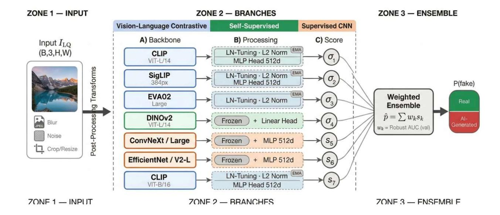
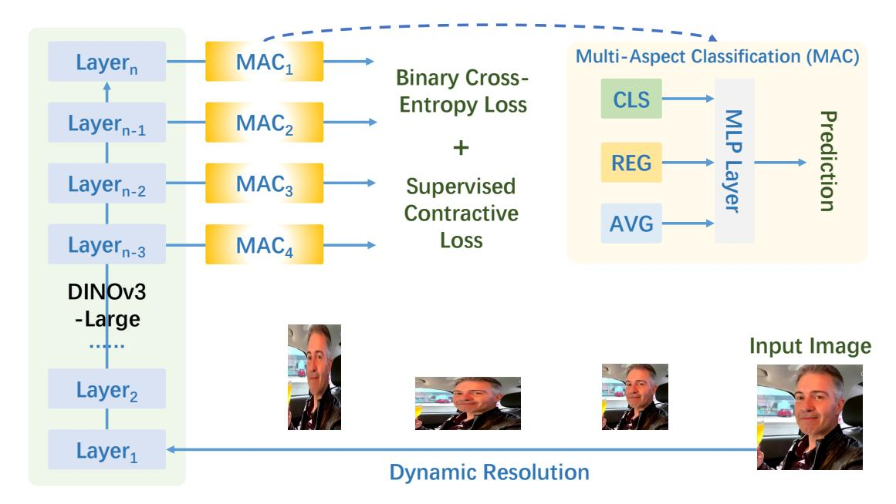

NTIRE 2026 Challenge on Robust AI-Generated Image Detection in the Wild
Abstract
This paper presents an overview of the NTIRE 2026 Challenge on Robust AI-Generated Image Detection in the Wild, held in conjunction with the NTIRE workshop at CVPR 2026. The goal of this challenge was to develop detection models capable of distinguishing real images from generated ones in realistic scenarios: the images are often transformed (cropped, resized, compressed, blurred) for practical usage, and therefore, the detection models should be robust to such transformations. The challenge is based on a novel dataset consisting of 108,750 real and 185,750 AI-generated images from 42 generators comprising a large variety of open-source and closed-source models of various architectures, augmented with 36 image transformations. Methods were evaluated using ROC AUC on the full test set, including both transformed and untransformed images. A total of 511 participants registered, with 20 teams submitting valid final solutions. This report provides a comprehensive overview of the challenge, describes the proposed solutions, and can be used as a valuable reference for researchers and practitioners in increasing the robustness of the detection models to real-world transformations.
1 Introduction
The emergence of generative AI has made the synthesis of photorealistic images increasingly accessible. Modern generative models — including diffusion-based architectures [64], generative adversarial networks [22], and autoregressive image generators [39] — are capable of producing images that are visually indistinguishable from real photographs. The widespread availability of such models through consumer-facing applications has led to an unprecedented volume of AI-generated imagery in circulation, raising serious concerns in the areas of media integrity, misinformation, digital forensics, and content authentication.
In recent years, the research community has developed a variety of methods for detecting AI-generated images. Early approaches [78] exploited generator-specific artifacts such as spectral periodicities characteristic of GAN upsampling [19] and checkerboard patterns introduced by transposed convolutions [71]. More recent methods target the residual artifacts of diffusion model denoising pipelines [81], or leverage large pretrained vision encoders fine-tuned on real/fake corpora [55].
Several prior works and competitions have contributed datasets and benchmarks for AI-generated image detection [92, 30, 87]. Despite notable progress, a fundamental and persistent limitation of existing detectors is their lack of robustness to real-world image transformations. In practical deployment scenarios, images are routinely cropped, resized, recompressed, and blurred before they are encountered by a detector — operations that can substantially degrade detection performance [37]. However, existing benchmarks typically either cover a limited number of generators or do not systematically account for real-world image transformations, or evaluate both aspects in isolation. Therefore, the creation of modern detectors that are robust to such transformations remains a serious gap in AI-generated image detection.
This paper presents the NTIRE 2026 Challenge on Robust AI-Generated Image Detection in the Wild, which aims to explore and enhance the robustness of detectors to real-world image transformations, including operations that can substantially disrupt detectors trained on clean data. The challenge is built around a novel large-scale dataset comprising 108,750 real images and 185,750 AI-generated images sourced from 42 generators that span a wide range of open-source and closed-source architectures. Crucially, the dataset incorporates 36 image transformation types reflecting realistic post-processing and distribution conditions, enabling a principled assessment of detector robustness.
This paper provides an overview of the methods submitted to the challenge and reports on their performance. The ideas proposed in this challenge can be used to enhance the robustness of the detectors to real-world transformations, in addition to increasing the detection accuracy that is important in critical spheres.
This challenge is one of the challenges associated with the NTIRE 2026 Workshop 11 1 https://www.cvlai.net/ntire/2026/ on: deepfake detection [31], high-resolution depth [89], multi-exposure image fusion [61], AI flash portrait [26], professional image quality assessment [59], light field super-resolution [80], 3D content super-resolution [77], bitstream-corrupted video restoration [93], X-AIGC quality assessment [44], shadow removal [74], ambient lighting normalization [73], controllable Bokeh rendering [65], rip current detection and segmentation [16], low light image enhancement [12], high FPS video frame interpolation [13], Night-time dehazing [2, 3], learned ISP with unpaired data [58], short-form UGC video restoration [40], raindrop removal for dual-focused images [41], image super-resolution (x4) [10], photography retouching transfer [17], mobile real-word super-resolution [38], remote sensing infrared super-resolution [42], AI-Generated image detection [27], cross-domain few-shot object detection [60], financial receipt restoration and reasoning [25], real-world face restoration [76], reflection removal [6], anomaly detection of face enhancement [91], video saliency prediction [49], efficient super-resolution [63], 3d restoration and reconstruction in adverse conditions [43], image denoising [67], blind computational aberration correction [69], event-based image deblurring [68], efficient burst HDR and restoration [57], low-light enhancement: ‘twilight cowboy’ [34], and efficient low light image enhancement [85].
2 Challenge
Our challenge is dedicated to the task of distinguishing AI-generated images produced in Text-to-Image setting from real imagery. We focus on the most general image domain, without confining to particular subdomains such as faces, humans, or specific object classes. The goals of this competition is threefold: 1) Assess the current state of AI-powered image generation and its differentiability from the real images; 2) Evaluate the detection robustness under complex image degradation pipelines; 3) Appraise the generalization capabilities of the modern detectors to unseen generators.
2.1 Dataset
For this challenge, we introduce our novel dataset containing both high-quality real-world imagery and AI-generated images sourced from a diverse set of generators, ranging from older Stable Diffusion [64] models up to the most recent models to date (e.g., Nano Banana 2 [52], SeeDream 5 Lite [54]).
Real subset. To construct a diverse and comprehensive set of real images that represent “in-the-wild” content, we collect them from 3 large-scale web-sourced image-text datasets: CC12M [9], CommonPool [21] and RedCaps [15]. After initial filtering for explicit and inappropriate content and data availability check, a total of 12M images were selected. To increase data quality, we employed series of additional filtering stages, ranging from resolution thresholding and CLIP-deduplication to complex VLM-based image categorization and scoring, further reducing the number of suitable images by 90%. Finally, we sample 100,000 unique real images from our filtered set for the training stage, and 9k in total for validation and test splits.
Generated subset. To produce generated images, we utilize 42 open-source and proprietary Text-to-Image generators released between 2022 and 2026. Generation prompts for this subset are collected from the corresponding real images: we first employ a Large Vision-Language model to produce detailed image captions and then rewrite them into concise and structured prompts using LLM. By “pairing” generated images with their real counterparts, we ensure that both subsets reflect similar semantics and content distribution, which should help detectors learn content-agnostic features. To further minimize potential biases in generated imagery, we also align its distributions of resolutions, aspect ratios, JPEG compression quality factors, and other statistics to those of the real subset. For the training split, for each real image (out of 100k), we randomly select from 1 to 3 generators to produce corresponding generated images, resulting in 177k samples. The training split covers 20 open-source generators in total, with the most recent models including Flux Kontext (dev) [36], DeepFloyd-IF [51], and Ovis-image [75]. Most of the top-performing open-source models (e.g. Qwen-Image [83], HiDream [7], etc.) as well as proprietary generators (Nano Banana [53], Grok Imagine [50], etc.) were reserved for validation and test splits, with each consecutive split containing progressively larger share of state-of-the-art models. For validation and test splits, we use only unique images without its paired counterpart to avoid potential advantage from selecting between multiple similar images. More details on the contents of each split can be found in Appendix in Tables 3 and 4.
Robust detection track. Our competition includes a special track designed to evaluate detectors’ performance in a more challenging scenario where input images might be significantly distorted to conceal its nature. This track reflects various image corruptions and artifacts which might be encountered in real-world detector deployment. To this purpose, we employed an image degradation pipeline inspired by [1]. Each image is transformed with 1 to 5 randomly sampled consecutive distortions from different groups (e.g., noise, compression, blur, etc.). Each transformation has multiple magnitude levels, which are sampled independently on each application. In the robust detection track, both real and generated images undergo the same degradation pipeline. To avoid detector tuning for specific distortion types, we employed different sets of distortions in each dataset split and progressively complicated them in the last stages of the challenge. To identify the most challenging distortion types, we utilized our pre-trained detectors and analyzed their performance on degraded images. In total, we employ 36 different transformation types across the challenge stages, ranging from simple transforms like Gaussian blur and white noise, up to complex techniques like invisible image watermarking [84] , neural compression [11, 4] and watermark-erasing adversarial attacks [66]. Full list of the transformations can be found in Tables 3 and 4. In validation and test splits, half of the real and generated images are selected for the robust track and distorted with the aforementioned pipeline.
2.2 Evaluation metrics
- •
Primary metric – Robust ROC AUC, computed over all distorted images in the set. It measures the detector’s global discriminative ability under complex postprocessing pipelines.
- •
Secondary metric – Clean ROC AUC, computed over all non-distorted images in the set. It measures detector performance in a clear setting, disregarding potential image transformations.
ROC AUC is measured between binary labels (0/1), where 1 indicates a fake image, and the confidence scores submitted by the participants. We selected ROC AUC over Accuracy or F1 score, as it does not require quantizing participants’ predictions to binary scores with a predefined threshold.
3 Challenge Methods and Teams
3.1 MICV
3.1.1 Technical Details
Overview
In this work, we propose a robust ensemble-based framework for AI-generated image detection, specifically designed to address the challenges of domain generalization and cross-platform detection. Our approach centers on three core pillars:
- •
Hierarchical Data Strategy: We curate a large-scale, multi-source training corpus that integrates open-source academic benchmarks, synthetic images from cutting-edge generative models, and high-fidelity samples from closed-source commercial APIs, ensuring comprehensive coverage of diverse generative artifacts.
- •
Ensemble-based Architecture: We utilize the powerful representation capabilities of multiple DINOv3 backbones, organized into two distinct model committees. By employing a late-fusion strategy that averages the detection probabilities derived from these ensembles, we achieve a more holistic and discriminative signature of AI-generated content.
- •
Robust Augmentation: To enhance robustness against “in-the-wild” degradations, we implement a hierarchical, difficulty-aware data augmentation pipeline. Combined with a Focal Loss-driven optimization and Stochastic Weight Averaging (SWA), our approach effectively bridges the distribution gap between laboratory benchmarks and real-world unconstrained imagery.
Data Collection
High-quality, large-scale, and diverse datasets are fundamental to the robustness and generalizability of AI-Generated Image detection. To effectively emulate the complex, “in-the-wild” distribution of generative artifacts, we curate a comprehensive training corpus comprising millions of samples. Our data acquisition strategy is hierarchical, categorized into four primary tiers:
- •
Open-Source Datasets: To establish a solid foundation for cross-domain generalization, we integrate a diverse array of open-source resources, ranging from established academic benchmarks to large-scale repositories hosted on platforms like HuggingFace. This collection includes, but is not limited to, GenImage, WildFake, AIGIBench, CommunityForensics, and So-Fake-Set, along with representative datasets sourced from open-source communities. By aggregating these heterogeneous data sources, we ensure that our model is exposed to a wide spectrum of generation paradigms and realworld artifacts, significantly enhancing the scalability and effectiveness of our model.
- •
Open-Source Generative Models: To align with the rapid evolution of generative architectures, we construct a substantial synthetic dataset using state-of-the-art open-source models. Our pipeline encompasses a multifaceted range of generation tasks, including Text-to-Image (T2I), Image-to-Image (I2I), image editing and inpainting, leveraging representative models such as Qwen-Image, Z-Image, and the FLUX series to capture the distinct artifacts inherent in contemporary architectures.
- •
Closed-Source Commercial Models: Given the prevalence of closedsource platforms in real-world applications, we supplement our corpus with high-fidelity samples obtained via official APIs. By integrating outputs from industry-leading engines such as Seedream, Kling, GPT-Image, and Nano-banana-pro, we effectively mitigate the distribution shift between open-source research models and proprietary commercial systems, thereby enhancing the detector’s practical deployment efficacy.
- •
Challenge-Specific Datasets: To further expand our set of training samples, we utilized the image samples provided by the competition organizers.
Methodology
As illustrated in Figure 1, we propose a feature fusion architecture for AIgenerated image detection. Our approach leverages the powerful feature representation capabilities of DINOv3 backbones by employing two distinct subnetworks, each designed to process image features through an ensemble of pretrained backbones.
Specifically, the architecture comprises two independent streams: the first stream aggregates feature maps from a committee of four DINOv3 backbones, while the second stream integrates features from a separate committee of two DINOv3 backbones. Within each sub-network, the aggregated backbone features are processed through a dedicated projection layer to map them into a latent space, followed by a multi-layer perceptron (MLP) head that produces the detection probability. To derive the final prediction, we average output probabilities from both streams.
To bridge the distribution shift between controlled benchmarks and challenging “in-the-wild” imagery, we design a hierarchical, stochastic data augmentation pipeline structured by difficulty levels. Our pipeline progresses from simple, individual transformations to complex combinatorial perturbations. While the former applies individual degradations such as blur, noise, geometric shifts or compression, the latter employs multi-stage pipelines that simulate complex degradations. This hierarchical and multi-faceted augmentation strategy effectively narrows the domain gap, ensuring superior detection performance even in highly unconstrained and degraded environments.

Implementation Details
We initialize our framework using pretrained DINOv3 backbones and perform end-to-end fine-tuning. During training, images are randomly cropped and resized to 512 × 512 pixels, supplemented by our hierarchical augmentation pipeline. During inference, images are directly resized to 512 × 512 to preserve the global spatial context. The model is trained on 32 NVIDIA A100 GPUs for 10 epochs, with the entire procedure completing in approximately 8 hours.
- •
Objective Function: We employ Focal Loss as our primary objective function to address the potential imbalance in sample difficulty and to mitigate the dominance of easy-negative samples. The focus parameter is set to 2.0, and the balance parameter is empirically set to 0.5, to ensure that the model focuses on hard-to-classify generative artifacts.
- •
Optimization Strategy: We utilize the AdamW optimizer with a weight decay of 0.02. The learning rate is initialized at 1×10-5. To ensure training stability, we implement a linear warmup strategy over the first epoch, followed by a Cosine Annealing schedule to gradually decay the learning rate for the remainder of the training process. We employ Stochastic Weight Averaging (SWA) over the final epochs to aggregate model weights. This refinement yields a more stable and generalized weight configuration, which serves as our final inference model.
- •
Evaluation and Refinement: We evaluate model performance using the Area Under the Receiver Operating Characteristic curve (ROC AUC) on a dedicated validation set, which is curated by sampling 10,000 labelbalanced images from the official training corpus. To ensure a robust assessment under challenging conditions, we apply a static version of the hierarchical data augmentation pipeline to this validation set to assess robustness.
Acknowledgments
We sincerely thank the open-source community, whose contributions have been instrumental to the development of this framework. We are especially grateful to the creators of various AIGC detection benchmarks for providing the foundation of our study, and to the research teams behind state-of-the-art generative models for open-sourcing the architectures and tools that enabled our high-quality data synthesis.
3.2 Ant International
3.2.1 Introduction
The rapid progress of text-to-image (T2I) generation has made synthetic images increasingly photorealistic, creating a pressing need for robust AI-generated image detection. Our solution for the NTIRE 2026 Robust AI-Generated Image Detection Challenge is guided by three principles:
- •
Massive and diverse data: large-scale multi-source training set with extensive augmentations.
- •
Model scaling: leveraging very large vision backbones for improved generalization.
- •
Expert ensemble: combining two complementary specialists trained with different strategies.

3.2.2 Data Preparation and Augmentation
Our training set contains approximately 1 million images from three sources:
- •
Official NTIRE 2026 challenge training set.
- •
Self-generated synthetic images from LongCat-Image, Z-Image, Qwen-Image, and Qwen-Image-2512.
- •
Open-source detection datasets: Dragon and UniGenBench.
To improve robustness, we apply a four-level offline augmentation pipeline:
- •
Level 1 (Clean): original images.
- •
Level 2 (Mild): 1–3 random distortions, severity sampled with mean 0 and std 2.5.
- •
Level 3 (Moderate): 3–6 random distortions, mean 2.5 and std 2.0.
- •
Level 4 (Heavy): fixed 6 distortions, mean 3.5, std 1.0.
3.2.3 Backbone Selection
We evaluated several large-scale vision backbones (eva02-large, eva-giant, siglip2-giant, DINOv3-7B). Experiments showed strong scaling behavior: larger models and higher input resolutions consistently improved performance and generalization. Therefore, we selected DINOv3-7B as the base architecture.
3.2.4 Dual-Expert Ensemble Architecture
Our final model is a dual-expert ensemble consisting of two independently fine-tuned DINOv3-7B models (total 14B parameters). Given an input image, both experts produce detection scores, which are aggregated into a final robust prediction. Both experts are trained with full-parameter fine-tuning on NVIDIA B200 GPUs.
3.2.5 Expert Training Strategy
Expert 1: High-Resolution Specialist
- •
Data: Levels 2, 3, and 4 only.
- •
Pooling: attention_pooling.
- •
Input resolution: .
- •
Online augmentation: random horizontal flip () + AugMix (m6-w3-d1).
- •
Training setup: 1 epoch, learning rate , Model EMA, AMP, no dropout.
Expert 2: Robustness-Focused Specialist
- •
Data: Levels 1, 2, 3, and 4.
- •
Pooling: first_token_pooling.
- •
Input resolution: .
- •
Training duration: 10 epochs.
3.2.6 Inference
Inference consists of two steps:
- 1.
Test-time augmentation (TTA): each expert predicts on multiple augmented variants of each test image.
- 2.
Weighted ensembling: TTA outputs are aggregated per expert, then combined via weighted averaging across experts.
On a single NVIDIA A100 GPU, the full pipeline runs at approximately 2.21 images/s with 78.25 GB VRAM usage.
3.2.7 Conclusion
Our NTIRE 2026 solution shows that robust AI-generated image detection benefits strongly from:
- •
model scaling (DINOv3-7B),
- •
large and diverse augmented data,
- •
and complementary dual-expert ensembling.
By combining a high-resolution specialist and a robustness-focused specialist, we achieve strong generalization under real-world image transformations.
3.3 TeleAI-TeleGuard. TeleAI Strategy for Robust AI-Generated Image Detection in the Wild
3.3.1 Proposed Method
We propose a LoRA-based Pairwise Training (LPT) strategy to achieve robust detection of AI-generated images (AIGI). As shown in Figure 3, this strategy consists of three components: foundation-model fine-tuning, distortion simulation, and pairwise optimization.
In addition to the distortions provided by the organizer, after inspecting the validation set we introduce three extra distortion types—Speckle Noise, Color Cast, and Organic Moire—which better match the target data distribution. We also increase distortion severity by setting the mean of the Gaussian distribution to 3.
The foundation model in LPT is EVA-CLIP [70]. Following LoRA-style fine-tuning [32], we adapt the linear layers in the multi-head self-attention (MHSA) and feed-forward network (FFN) of each visual transformer block.
To improve robustness without degrading clean-sample performance, we adopt pairwise optimization by jointly feeding clean images and their corresponding distorted versions in each batch. Features extracted from distorted images are corrected by an additional feed-forward network. The overall training loss is:
| (1) |
where , , , and denote clean samples, distorted samples, clean-sample features, and corrected distorted-sample features, respectively. , , and are cross-entropy, KL divergence, and mean squared error losses. We set and .
Experiments are conducted on eight NVIDIA A800 GPUs for 5 epochs. We use AdamW [48] with an initial learning rate of and a cosine annealing scheduler [47]. To further improve generalization, we additionally include the So-Fake [33] and Chameleon [86] datasets during training.

3.4 INTSIG

3.4.1 Model Training Strategies
Overview.
We develop five complementary detectors in a staged pipeline. Model 1 is a full fine-tuning baseline on DINOv3-Huge. Model 2 continues training with expanded data. Model 3 further increases robustness with stronger distortion augmentation. Model 4 introduces a high-resolution branch (). Model 5 replaces the backbone with MetaCLIP2 Giant and applies partial fine-tuning. This design balances in-domain accuracy and OOD robustness.
Model 1: Baseline.
Model 1 uses DINOv3-Huge with an MLP head:
| (2) |
We use AdamW (betas ) with separate parameter groups: backbone lr , weight decay ; head lr , weight decay . The learning-rate schedule is 10% warmup followed by cosine annealing, stepped per batch. Cross-entropy is used as the training objective, and class imbalance is handled by a distributed weighted sampler. Training data includes the official training set, SoFake-OOD, and RRDataset (10% validation split). Inputs are preprocessed with random resized crop (, bicubic, scale , ratio ), random horizontal flip, and color jitter. Distortion augmentation is enabled with probability 0.5 (up to 3 distortions, 3 levels). Training runs for 20 epochs on 8H800 (DDP), with per-GPU batch size 16/8 (train/val).
Model 2: Incremental training with dataset expansion.
Starting from Model 1, we reduce learning rates (backbone , head ) and expand training data to: official set + SoFake-OOD + RRDataset + Chameleon + 50% GenImage_val + AIGIBench_test. Other settings are unchanged.
Model 3: Incremental training with enhanced augmentation.
Model 3 continues from Model 2 while increasing distortion intensity to 5 distortions and 5 levels (augmentation probability remains 0.5). Other settings are unchanged.
Model 4: High-resolution path.
Model 4 uses inputs to capture finer artifacts. AdamW is retained with 5% warmup and cosine annealing. Learning rates are set to (backbone) and (head). Training data is the official set only, with a 1% validation split. Preprocessing follows the same policy as Model 1 but at resolution. Distortion augmentation uses probability 0.5, with up to 3 distortions and 5 levels.
Model 5: Backbone replacement.
Model 5 adopts MetaCLIP2 Giant. We partially fine-tune all LayerNorm parameters and the full parameters of the last two layers. The classifier is:
| (3) |
Training uses the official set, learning rate , and FocalLoss. Inputs are resized to ; training includes random flip, random rotation, and random augmentation. Distortion augmentation is lighter (probability 0.2, 3 distortions, 3 levels).
| Model | Input | Core change | Weight |
| M1 | DINOv3-Huge baseline | 0.3675 | |
| M2 | Incremental data expansion | 0.0735 | |
| M3 | Stronger distortion augmentation | 0.0490 | |
| M4 | High-resolution branch | 0.2100 | |
| M5 | MetaCLIP2 Giant backbone | 0.3000 |
3.4.2 Model Ensemble Strategy
Weighted hierarchical fusion.
The final logit is computed as:
| (4) |
Horizontal-flip TTA is applied to M3 and M4.
Dual-gating correction.
We define directional confidence:
| (5) |
Gate-1 (strong consensus correction) is triggered when M4 and M5 strongly agree (, ), but the fused output has the opposite direction. We then shift the final logit by 2.5 toward the M4/M5 direction. Gate-2 (anomaly suppression) is triggered when at least 3 models in agree while M4 disagrees; M4 is excluded and remaining weights are renormalized.
3.4.3 Engineering Optimization
Parallel inference.
Inference runs with one CUDA stream per model, CPU-side multi-threaded preprocessing, and AMP for M1–M4.
I/O and overlap.
We use asynchronous data loading (num_workers=4) and prefetching (prefetch=4), overlapping CPU preprocessing with GPU inference to reduce idle time.
| Dimension | Technical solution | Effect |
| GPU parallelism | 5 independent CUDA streams | Full model overlap |
| Compute precision | AMP for M1–M4 | 30% throughput gain |
| Data loading | Async I/O + prefetch=4 | Reduced wait time |
| Pipeline | CPU/GPU overlap | Higher utilization |
3.5 Vincentlc. Robust AI-Generated Image Detection via SigLIP2-Giant and Perturbation-Aware Training

| Open Test | Hidden Test | Average | ||||
| Method | ROC AUC | Rob. ROC AUC | ROC AUC | Rob. ROC AUC | ROC AUC | Rob. ROC AUC |
| MICV | 0.9978 | 0.9738 | 0.9969 | 0.9707 | 0.9974 | 0.9723 |
| Ant International | 0.9973 | 0.9731 | 0.9971 | 0.9711 | 0.9972 | 0.9721 |
| TeleAI-TeleGuard | 0.9762 | 0.9215 | 0.9809 | 0.9286 | 0.9786 | 0.9251 |
| INTSIG | 0.9810 | 0.9090 | 0.9895 | 0.9171 | 0.9897 | 0.9130 |
| vincentlc | 0.9497 | 0.8633 | 0.9557 | 0.8828 | 0.9527 | 0.8730 |
| UESTC | 0.9693 | 0.8558 | 0.9764 | 0.8800 | 0.9729 | 0.8679 |
| Reagvis Labs | 0.9423 | 0.8474 | 0.9481 | 0.8733 | 0.9452 | 0.8603 |
| PSU | 0.9132 | 0.8334 | 0.9322 | 0.8483 | 0.9227 | 0.8408 |
| Shallow Real | 0.9954 | 0.8302 | 0.9951 | 0.8370 | 0.9953 | 0.8336 |
3.5.1 Overview
We propose a simple yet effective framework for detecting AI-generated images in the wild. Our method combines a pre-trained vision–language backbone with a lightweight linear classification head. To improve robustness under severe real-world distribution shifts, we explicitly integrate the official image distortion pipeline used in challenging evaluation protocols [37] into training, forcing the network to learn perturbation-invariant representations.
3.5.2 Model Architecture
Backbone Feature Extractor.
We experimented with multiple scales of the SigLIP2 family and found that the largest variant, siglip2-giant-opt-patch16-384, achieves the strongest performance. For downstream binary classification, we extract the patch-token sequence from the final hidden layer of the pre-trained SigLIP2 encoder [23].
Feature Aggregation and Classification Head.
We evaluated several aggregation strategies, including CLS-token extraction, attention pooling, and multi-layer feature concatenation. Empirically, global average pooling over all final-layer patch tokens yields the most robust and stable results. The pooled feature vector is then fed into a single linear layer to produce real/fake logits.
3.5.3 Robust Data Augmentation
Spatial Transforms (“Squish” Strategy).
Instead of random resized cropping (which may remove localized forensic cues), we apply a “squish” strategy: all images are directly resized to (ignoring aspect ratio), followed by random horizontal flipping. This preserves full image content while maintaining training efficiency.
Competition-Specific Distortions.
We wrap the official distort_images function into the PyTorch transform pipeline. In our best run, we set distortion_prob=1.0, so every training image is distorted, with up to three random post-processing operations sampled at multiple severity levels (num_levels=5). This aggressive augmentation acts as a strong regularizer and is a key driver of our Robust ROC AUC improvements.
4 Results
Table 3 presents the final scores and rankings of the top-9 participating teams. All submissions were verified by re-running the provided models in the official evaluation environment to ensure consistency with the public leaderboard.
The final ranking is determined based on the average Robust ROC-AUC across the open and hidden test datasets. For completeness, we also report the average clean ROC-AUC, as well as all individual metrics, including clean and robust ROC-AUC on both dataset splits.
Overall, the top-performing methods achieve ROC AUC values exceeding 0.99. The MICV team ranks first according to the primary metric, achieving the highest average Robust ROC-AUC of 0.9723. Their method also delivers the best average clean ROC-AUC (0.9974), indicating strong performance under both standard and robustness-aware evaluations. Ant International closely follows in second place, achieving the best performance on the hidden test set for both clean and robust ROC-AUC (0.9971 and 0.9711, respectively). This demonstrates excellent generalization to unseen data. The small margin between the top-2 teams suggests that both approaches are competitive and approach the upper bound of performance on this benchmark. A clear performance gap is observed between the top-2 teams and the remaining participants. Methods such as TeleAI-TeleGuard and INTSIG achieve strong clean ROC AUC scores (around 0.98–0.99), but show noticeably lower robustness, with Robust ROC-AUC dropping to approximately 0.91–0.93. This indicates increased sensitivity to challenging conditions and highlights robustness as a key differentiating factor. The lower-ranked methods, including vincentlc and UESTC, exhibit further degradation in both clean and robust metrics, particularly in the robustness setting, where performance falls below 0.88.
5 Conclusion
In the NTIRE 2026 Robust AI-Generated Image Detection in the Wild, 500+ registeres participants competed to develop state-of-the-art deepfake detection methods for a novel dataset of 250,000+ images. Most final solutions used Expert-base architecture with several different models and use Transformer-based architectures. The results suggest that, although performance has improved substantially, the problem is not yet solved, and there remains room for advances in design, training strategies and data curation.
6 Acknowledgments
The work of Aleksandr Gushchin, Khaled Abud, Ekaterina Shumitskaya, Georgii Bychkov, Sergey Lavrushkin, Anastasia Antsiferova, and Dmitry Vatolin was financially supported by the Institute for Artificial Intelligence of Lomonosov Moscow State University. The evaluation was carried out using the MSU-270 supercomputer of the Lomonosov Moscow State University. Future subjective evaluations of artifact visibility will be conducted using Yandex.Tasks. The submission system was partially supported by the Humboldt Foundation, OPPO, Kuaishou, and the University of Wurzburg (Computer Vision Lab).
7 Teams and Affiliations
7.1 NTIRE 2026 Challenge Organizing team
Members:
Aleksandr Gushchin1 (alexander.gushchin@graphics.cs.msu.ru),
Khaled Abud1 (khaled.abud@graphics.cs.msu.ru),
Ekaterina Shumitskaya1 (ekaterina.shumitskaya@graphics.cs.msu.ru),
Artem Filippov2 (artyom.filippov@graphics.cs.msu.ru),
Georgii Bychkov1 (georgy.bychkov@graphics.cs.msu.ru),
Sergey Lavrushkin1 (sergey.lavrushkin@graphics.cs.msu.ru),
Mikhail Erofeev5 (mikhail@erofeev.pw),
Anastasia Antsiferova1 (Aantsiferova@graphics.cs.msu.ru),
Changsheng Chen3 (cschen@smbu.edu.cn),
Shunquan Tan3 (tansq@smbu.edu.cn),
Radu Timofte4 (radu.timofte@uni-wuerzburg.de),
Dmitry Vatolin1 (dmitriy@graphics.cs.msu.ru)
Affiliations:
1 MSU Institute for Artificial Intelligence
2 Lomonosov Moscow State University
3 Shenzhen MSU-BIT University
4 University of Würzburg
5 Independent Researcher
7.2 MICV
Members:
Chuanbiao Song1 (songchuanbiao.scb@antgroup.com),
Zijian Yu1 (yuzijian.yzj@antgroup.com),
Hao Tan1 (tanhao2023@ia.ac.cn),
Jun Lan1 (yelan.lj@antgroup.com)
Affiliations:
1 Ant Group, China
7.3 Ant International
Members:
Zhiqiang Yang1 (874125760@qq.com),
Yongwei Tang1 (1598521844@qq.com),
Zhiqiang Wu1 (1753940858@qq.com),
Jia Wen Seow1 (sscarlettss0111@gmail.com),
Hong Vin Koay1 (koayhv@gmail.com),
Haodong Ren1 (renhaodong.rhd@ant-intl.com),
Feng Xu1 (fuyu.xf@ant-intl.com),
Shuai Chen1 (shuai.cs@ant-intl.com)
Affiliations:
1 Ant International, Singapore
7.4 TeleAI-TeleGuard
Members:
Ruiyang Xia1 (ryon@stu.xidian.edu.cn),
Qi Zhang1 (zhangq139@chinatelecom.cn),
Yaowen Xu1 (xuyw1@chinatelecom.cn),
Zhaofan Zou1 (zouzhf41@chinatelecom.cn),
Hao Sun1 (sunh10@chinatelecom.cn)
Affiliations:
1 TeleAI-TeleGuard, China
7.5 INTSIG
Members:
Fei Wu1,2 (wu_fei@sjtu.edu.cn),
Dagong Lu1 (dagong_lu@intsig.net),
Mufeng Yao1 (mufeng_yao@intsig.net),
Xinlei Xu1 (xinlei_xu@intsig.net),
Fengjun Guo1 (fengjun_guo@intsig.net)
Affiliations:
1 IntSig Information Co. Ltd, Shanghai, China
2 Shanghai Jiao Tong University, Shanghai, China
7.6 Vincentlc
Members:
Cong Luo (1486891983@qq.com)
7.7 Reagvis Labs
Members:
Hardik Sharma1 (d25092@students.iitmandi.ac.in),
Aashish Negi1 (dd25011@students.iitmandi.ac.in),
Prateek Shaily1 (prateekshaily820@gmail.com),
Jayant Kumar1 (aryanjay2k05@gmail.com),
Sachin Chaudhary1 (sachin.chaudhary@ddn.upes.ac.in),
Akshay Dudhane1 (akshay.dudhane@mbzuai.ac.ae),
Praful Hambarde1 (praful@iitmandi.ac.in),
Amit Shukla1 (amitshukla@iitmandi.ac.in)
Affiliations:
1 IIT Mandi, Reagvis Labs, Mandi, India
7.8 UESTC
Members:
Zhilin Tu1 (202521080234@std.uestc.edu.cn),
Fengpeng Li1 (fengpeng.li@connect.umac.mo),
Jiamin Zhang1 (18482160071@163.com),
Jianwei Fei1 (fei_jianwei@163.com),
Kemou Li1 (yc47912@umac.mo),
Haiwei Wu1 (haiweiwu@uestc.edu.cn)
Affiliations:
1 University of Electronic Science and Technology of China, China
7.9 PSU
Members:
Bilel Benjdira1 (bbenjdira@psu.edu.sa),
Anas M. Ali1 (aaboessa@psu.edu.sa),
Wadii Boulila1 (wboulila@psu.edu.sa)
Affiliations:
1 Prince Sultan University, Robotics and Internet-of-Things Laboratory, Riyadh, Saudi Arabia
7.10 ShallowReal
Members:
Chenfan Qu1 (202221012612@mail.scut.edu.cn),
Junchi Li2 (hongge568@126.com)
Affiliations:
1 South China University of Technology, Guangzhou, China
2 Zhejiang University, Hangzhou, China
8 Challenge Methods and Teams (Continued)
8.1 Reagvis Labs. RAPID: Robust AI-Generated Prototype Image Detection
We propose RAPID, a cascaded six-model ensemble for robust AI-generated image detection under realistic degradations. The system combines four complementary representation families: CLIP [62], SigLIP [90], SRM-style forensic residual modeling [20], and EVA-02 masked-image pretraining [18]. Each branch is fine-tuned with parameter-efficient adaptation (mainly LoRA [32]), and final prediction is obtained by staged logit-space fusion. To keep memory low, models are executed sequentially; peak VRAM remains below 4 GB.
8.1.1 Architecture
RAPID uses six detectors in a progressive refinement cascade. The main semantic branch (G4) is CLIP ViT-L/14 with LoRA on attention and MLP projections, followed by a GAPL prototype-attention head that compares normalized embeddings against learned forensic prototypes. A high-resolution SigLIP-v2 branch (384384) shares the same GAPL idea and improves sensitivity to fine local artifacts. In parallel, an SRM+Bayar ForensicCNN branch processes raw pixel inputs without normalization, explicitly modeling residual-domain inconsistencies. Two EVA-02 checkpoints provide complementary MIM-based cues: the original LoRA model and a retrained fixed-initialization variant with improved calibration under degradation. Finally, G4_v2 (continued training from G4 EMA) performs last-step correction on difficult modern generations.

8.1.2 Logit-Space Cascade Fusion
All branches output probabilities in . We combine them in logit space, where additive mixing is better calibrated than direct probability averaging.
| (6) |
| (7) | ||||
Here, , , , , , , , , and .
This cascade was built incrementally through validation ablations; each stage was retained only if it improved robust AUC.
8.1.3 Inference-Time Robustness
We apply 8-view TTA per model, mixing geometric and degradation-aware transforms (flip, multi-scale center crops, corner crops, blur, and JPEG perturbation). For sigmoid heads, we average logits across views and then apply sigmoid; for softmax heads, we average class probabilities. SigLIP uses resolution-matched 384px variants of the same views, while SRM uses bicubic resizing on raw inputs.
8.1.4 Training Protocol
All branches are trained on the official NTIRE 2026 data using AdamW with cosine decay and warmup, EMA checkpointing, and mixed precision where stable. Augmentations include random crop/flip, JPEG recompression, Gaussian blur/noise, and random resizing. Transformer branches use LoRA (typically ), while G4_v2 is obtained by low-LR continuation from the G4 EMA checkpoint with SAM and CutMix for harder-sample generalization.
8.1.5 Runtime and Memory
Table 4 reports per-model latency and memory on an H100.
| Model | Time (ms) | Peak VRAM (GB) | Fine-tuning |
| G4 (CLIP+GAPL) | 37 | 2.6 | LoRA (attn+MLP) |
| SigLIP-v2 | 26 | 1.8 | LoRA (384px) |
| SRM ForensicCNN | 5 | 0.1 | full training (FP32) |
| EVA-02 (original) | 25 | 1.3 | LoRA + SwiGLU |
| EVA-02 (fixed) | 25 | 1.3 | LoRA retrain |
| G4_v2 (CLIP+GAPL) | 37 | 2.6 | LoRA continuation |
8.1.6 Design Rationale
RAPID is built around complementarity: semantic and language-aligned features (CLIP/SigLIP), residual forensic cues (SRM), and MIM-driven representations (EVA-02) fail on different samples, making staged logit blending consistently stronger than any single branch. Prototype-attention heads improve interpretability by comparing each image to learned real/fake forensic anchors, while degradation-aware TTA stabilizes predictions under compression, blur, and scale shifts commonly observed in the wild.
8.2 UESTC

Overview.
Our final detector is a multi-expert ensemble composed of four Vision Transformer backbones: two CLIP ViT-L/14 models [62] and two SigLIP So400M Patch14-384 models [90]. For each backbone, we attach a lightweight classification head that maps high-dimensional feature representations to binary predictions. Because the backbones have different native input configurations, we use backbone-specific preprocessing and standardize inputs to for CLIP and for SigLIP. Despite using four experts, inference remains efficient, with a peak GPU memory footprint of approximately 10 GB.
Backbone selection.
To identify suitable feature extractors, we conduct a large-scale empirical study over diverse backbones, including CLIP [62], SigLIP [90], MoCo [28], Swin Transformer [45], ConvNeXt [46], DINO [8], CoCa [88], and BEiT [5]. We compare representation quality, computational efficiency, and robustness to synthetic artifacts. Empirically, CLIP and SigLIP provide the best trade-off between discriminative capability and cross-domain generalization, and therefore form the basis of the final system.
Data strategy.
We improve robustness through two complementary components: training-set expansion and comprehensive degradation modeling. First, we expand the official training set with diverse synthesis pipelines, including state-of-the-art diffusion generators [29, 64], reconstruction pipelines, domain-transfer methods, and targeted adversarial attacks. This expansion introduces both realistic AI-generated samples and challenging hard negatives, exposing the detector to broader failure modes and emerging forgery artifacts. Second, we extend the official augmentation scripts with a wider array of degradation operators, covering complex blurs, noise patterns, compression artifacts, and advanced optical/digital distortions. These realistic perturbations encourage degradation-invariant representations and significantly improve robustness under distribution shifts caused by imaging conditions, transmission errors, and post-processing pipelines.
Training paradigm.
We treat deepfake detection as more than a vanilla binary classification task and adopt a two-stage training strategy. In Stage 1, each model is trained for two epochs with a standard binary objective (real vs. generated). In Stage 2, we introduce feature-level self-distillation with dense supervision: intermediate feature maps from the epoch-2 checkpoint are used as dense targets, and the model is explicitly optimized to align current representations with these distilled features. This dense alignment regularizes feature geometry, reduces overfitting to the competition distribution, and improves generalization to unseen generation methods and real-world domains.
Inference.
At inference time, we average the predicted probabilities from four independently trained experts (two CLIP variants and two SigLIP variants) to produce the final robust prediction.
8.3 PSU. PRISM: Paradigm-diverse Representation Integration for Synthesis-artifact Manifold Detection

8.3.1 Method Description
PRISM is a heterogeneous ensemble detector for AI-generated images, designed for robustness under JPEG compression, blur, noise, rescaling, and cropping. Our core hypothesis is that no single pre-training objective encodes the full forensic artifact manifold [78, 14]: contrastive objectives capture semantic inconsistencies; self-supervised patch objectives preserve texture discontinuities; supervised CNNs encode low-frequency spectral anomalies. Robust detection therefore requires explicit paradigm diversity.
Prior work.
Wang et al. [78] showed CNN detectors generalize across GAN generators with augmentation, yet collapse under JPEG re-compression [24]. Ojha et al. [55] froze CLIP and trained a linear probe, achieving strong cross-generator generalization. PRISM extends this by (i) covering three paradigms beyond CLIP, (ii) paradigm-specific fine-tuning, and (iii) weighting by robust AUC rather than clean accuracy.
Encoder pool.
We instantiate encoders across three paradigms (Table 5). For vision-language (VL) encoders (CLIP [62], SigLIP [90], EVA02 [18]), features are -normalized onto the unit hypersphere [79]:
preserving the contrastive geometry. DINOv2 [56], ConvNeXt [46], and EfficientNet-V2 [72] remain frozen; their features are passed directly to the classification head.
Paradigm-aware tuning.
VL encoders undergo LayerNorm tuning [82]: only LayerNorm scale/shift (about of weights) are updated, preventing catastrophic forgetting while adapting internal normalization to the forensic domain. All models use EMA () for checkpoint stabilization and calibrated posteriors. VL heads are two-layer MLPs (); DINOv2 uses a linear probe. Training uses label-smoothed BCE (), AdamW (), cosine LR schedule, and fp16.
| Encoder | Paradigm | Tune | Head | |
| CLIP ViT-L/14 | VL-Contrastive | 1024 | LN | MLP-512 |
| SigLIP ViT-L/16 | VL-Contrastive | 1024 | LN | MLP-512 |
| EVA02-Large | VL-Contrastive | 1024 | LN | MLP-512 |
| DINOv2 ViT-L/14 | Self-Supervised | 1024 | F | Linear |
| ConvNeXt-Large | Supervised CNN | 1536 | F | MLP-512 |
| EfficientNet-V2-L | Supervised CNN | 1280 | F | MLP-512 |
| CLIP ViT-B/16 | VL-Contrastive | 512 | LN | MLP-256 |
Robust ensemble.
Each model is scored on held-out validation data under all degradation types, yielding per-model robust AUC . Normalized weights
drive the ensemble. The final prediction with horizontal-flip TTA is
| (8) |
Early stopping maximizes
8.4 Shallow Real
8.4.1 Method Description
As shown in Fig. 9, we formulate robust AI-generated image detection as a binary classification task. Our model uses a DINOv3-Large backbone (following the DINO line of self-supervised visual encoders [56]), fine-tuned with Low-Rank Adaptation (LoRA) [32] using rank and scaling factor .

Final prediction is produced by a Multi-Aspect Classification (MAC) head operating on DINOv3 features. Specifically, the head aggregates: (i) one [CLS] token, (ii) four [REG] tokens, and (iii) one [AVG] token computed as the average of the remaining patch tokens. These six 1024-dimensional vectors are concatenated into a 6144-dimensional representation and passed to a two-layer MLP with an intermediate ReLU activation to output the binary score.
During training, we use three key techniques:
- 1.
Dynamic resolution. Input images are resized to random resolutions, where both height and width are sampled from (multiples of patch size 16), with a randomly selected interpolation method.
- 2.
Deep supervision. Auxiliary classification heads are attached to the last four layers of the DINOv3 backbone. Training loss is computed for each auxiliary output, while only the final-layer output is used at inference time. Each auxiliary head uses dropout with rate 0.2 in its fully connected layer.
- 3.
Metric learning objective. A supervised contrastive loss [35] is added as an auxiliary objective alongside the primary binary cross-entropy loss, improving feature discrimination.
The model is trained for 10 epochs using AdamW [48] with a linear learning-rate decay from to . Training uses the union of the official training set and the CommunityForensics dataset, with batch size 32 and the official data-augmentation pipeline.
| Split | # of Images | Real/Fake Ratio | Labels Provided | Generator Models | Transformations |
| Train | 277K | 1:1.77 | Yes | 20 Models: • YOSO PixArt-512 • PixArt- • PixArt- • Kandinsky 2 • Kandinsky 3 • Kolors • OmniGen • OmniGen 2 • Stable Diffusion 1.4 • Stable Diffusion 1.5 • Stable Diffusion 2.1 • Stable Diffusion XL 1.0 • SDXL Lightning • SDXL Turbo • Janus Pro 7B • Infinity 2B • Infinity 8B • Ovis Image • DeepFloyd IF • FLUX.1 Kontext Dev |
12 Transformations:
(Provided as distortion pipeline) • Gaussian Blur • Lens Blur • Color Shift • Color Saturation • JPEG Compression • White Noise • Impulse Noise • Brightness Increase • Brightness Decrease • Color Jitter • Color Quantization • Linear Contrast Change |
| Validation | 10K | 1:1 | Yes (After Completion) | 9 Models: • FLUX.1 Kontext Dev • SDXL Turbo • FLUX.1 Dev • Playground v2.5 • Lumina Image 2.0 • Qwen Image • Stable Diffusion 3 Medium • Ideogram v3 Turbo† • ImageGen-4 Fast† | 19 Transformations: • Gaussian Blur • Lens Blur • Color Shift • Color Saturation • JPEG Compression • White Noise • Impulse Noise • Brightness Increase • Brightness Decrease • Color Jitter • Color Quantization • Linear Contrast Change • Motion Blur • Multiplicative Noise • Pixelation • RGB Channel Shift • Random Crop • Random Aspect Crop • Downscale |
| Validation Hard | 2.5K | 1:1 | Yes (After Completion) | 7 Models: • Playground v2.5 • SDXL Turbo • HiDream • FLUX.1 Schnell • Stable Diffusion 3.5 Large Turbo • Nano Banana† • Seedream 4† | 19 Transformations: • Gaussian Blur • Lens Blur • JPEG Compression • White Noise • Impulse Noise • Color Quantization • Multiplicative Noise • RGB Channel Shift • Random Crop • Random Aspect Crop • Neural Image Compression (JPEG AI) • Random Tone Curve • CLAHE • ISO Noise • Perspective Transform • Multiple Compressions (JPEG) • Multiple Compressions (JPEG + JPEG AI) • Watermark Attack (Adv. Embedding, CLIP/ResNet) • Downscale |
| Split | # of Images | Real/Fake Ratio | Labels Provided | Generator Models | Transformations |
| Test (Public) | 2.5K | 1:1 | Yes (After Completion) | 10 Models: • HiDream • FLUX.1 Schnell • Stable Diffusion 3.5 Large • FLUX Krea • Z-Image Turbo • Nano Banana Pro† • FLUX-2 Max† • ImageGen-4 Ultra† • Seedream 5 Lite† • Grok Imagine Image† | 22 Transformations: • Color Saturation • Brightness Increase • Lens Blur • JPEG Compression • Impulse Noise • RGB Channel Shift • Random Crop • Random Aspect Crop • Neural Image Compression (JPEG AI) • Random Tone Curve • CLAHE • ISO Noise • Perspective Transform • Multiple Compressions (JPEG) • Multiple Compressions (JPEG + JPEG AI) • Watermark Attack (Adv. Embedding, CLIP/ResNet) • JPEG 2000 • Watermark Attack (WMForger) • Neural Image Compression (Cheng2020) • Shot Noise • Downscale • Invisible Watermark Insertion (1 of 6 algorithms) |
| Test (Private) | 2.5K | 1:1 | No | 10 Models: • HiDream • Stable Diffusion 3.5 Large Turbo • FLUX.1 Dev SRPO • Z-Image Turbo • Kandinsky 5 • Nano Banana 2† • GPT Image 1.5† • ImageGen-4 Ultra† • Seedream 5 Lite† • Grok Imagine Image† | 24 Transformations: • Color Saturation • Brightness Increase • Lens Blur • JPEG Compression • Impulse Noise • RGB Channel Shift • Random Crop • Random Aspect Crop • Neural Image Compression (JPEG AI) • Random Tone Curve • CLAHE • ISO Noise • Perspective Transform • Multiple Compressions (JPEG) • Multiple Compressions (JPEG + JPEG AI) • Multiple Compressions (JPEG + JPEG 2000) • Watermark Attack (Adv. Embedding, CLIP/ResNet) • JPEG 2000 • Watermark Attack (WMForger) • Neural Image Compression (Cheng2020) • Shot Noise • Glass Blur • Downscale • Invisible Watermark Insertion (1 of 7 algorithms) |
References
- [1] (2024) Arniqa: learning distortion manifold for image quality assessment. In Proceedings of the IEEE/CVF Winter Conference on Applications of Computer Vision, pp. 189–198. Cited by: §2.1.
- [2] (2026) NT-HAZE: A Benchmark Dataset for Realistic Night-time Image Dehazing . In Proceedings of the IEEE/CVF Conference on Computer Vision and Pattern Recognition (CVPR) Workshops, Cited by: §1.
- [3] (2026) NTIRE 2026 Nighttime Image Dehazing Challenge Report . In Proceedings of the IEEE/CVF Conference on Computer Vision and Pattern Recognition (CVPR) Workshops, Cited by: §1.
- [4] (2023) The jpeg ai standard: providing efficient human and machine visual data consumption. IEEE MultiMedia 30 (1), pp. 100–111. External Links: Document Cited by: §2.1.
- [5] (2021) BEiT: bert pre-training of image transformers. arXiv preprint arXiv:2106.08254. Cited by: §8.2.
- [6] (2026) NTIRE 2026 Challenge on Single Image Reflection Removal in the Wild: Datasets, Results, and Methods . In Proceedings of the IEEE/CVF Conference on Computer Vision and Pattern Recognition (CVPR) Workshops, Cited by: §1.
- [7] (2025) HiDream-i1: a high-efficient image generative foundation model with sparse diffusion transformer. arXiv preprint arXiv:2505.22705. Cited by: §2.1.
- [8] (2021) Emerging properties in self-supervised vision transformers. In ICCV, pp. 9650–9660. Cited by: §8.2.
- [9] (2021) Conceptual 12m: pushing web-scale image-text pre-training to recognize long-tail visual concepts. In Proceedings of the IEEE/CVF conference on computer vision and pattern recognition, pp. 3558–3568. Cited by: §2.1.
- [10] (2026) The Fourth Challenge on Image Super-Resolution (×4) at NTIRE 2026: Benchmark Results and Method Overview . In Proceedings of the IEEE/CVF Conference on Computer Vision and Pattern Recognition (CVPR) Workshops, Cited by: §1.
- [11] (2020) Learned image compression with discretized gaussian mixture likelihoods and attention modules. In Proceedings of CVPR, pp. 7939–7948. Cited by: §2.1.
- [12] (2026) Low Light Image Enhancement Challenge at NTIRE 2026 . In Proceedings of the IEEE/CVF Conference on Computer Vision and Pattern Recognition (CVPR) Workshops, Cited by: §1.
- [13] (2026) High FPS Video Frame Interpolation Challenge at NTIRE 2026 . In Proceedings of the IEEE/CVF Conference on Computer Vision and Pattern Recognition (CVPR) Workshops, Cited by: §1.
- [14] (2023) On the detection of synthetic images generated by diffusion models. In ICASSP, pp. 1–5. Cited by: §8.3.1.
- [15] (2021) Redcaps: web-curated image-text data created by the people, for the people. arXiv preprint arXiv:2111.11431. Cited by: §2.1.
- [16] (2026) NTIRE 2026 Rip Current Detection and Segmentation (RipDetSeg) Challenge Report . In Proceedings of the IEEE/CVF Conference on Computer Vision and Pattern Recognition (CVPR) Workshops, Cited by: §1.
- [17] (2026) Photography Retouching Transfer, NTIRE 2026 Challenge: Report . In Proceedings of the IEEE/CVF Conference on Computer Vision and Pattern Recognition (CVPR) Workshops, Cited by: §1.
- [18] (2024) EVA-02: a visual representation for neon genesis. In Proceedings of the IEEE/CVF Conference on Computer Vision and Pattern Recognition (CVPR), Cited by: §8.1, §8.3.1.
- [19] (2020) Leveraging frequency analysis for deep fake image recognition. In International conference on machine learning, pp. 3247–3258. Cited by: §1.
- [20] (2012) Rich models for steganalysis of digital images. IEEE Transactions on Information Forensics and Security 7 (3), pp. 868–882. Cited by: §8.1.
- [21] (2023) Datacomp: in search of the next generation of multimodal datasets. Advances in Neural Information Processing Systems 36, pp. 27092–27112. Cited by: §2.1.
- [22] (2020) Generative adversarial networks. Communications of the ACM 63 (11), pp. 139–144. Cited by: §1.
- [23] (2025) SigLIP 2: multilingual vision-language encoders with improved semantic understanding, localization, and dense features. Note: https://huggingface.co/google/siglip2-giant-opt-patch16-384Model card / release page, accessed: 2026-03-20 Cited by: §3.5.2.
- [24] (2021) Are gan generated images easy to detect? a critical analysis of the state-of-the-art. In ICME, pp. 1–6. Cited by: §8.3.1.
- [25] (2026) NTIRE 2026 Challenge on End-to-End Financial Receipt Restoration and Reasoning from Degraded Images: Datasets, Methods and Results . In Proceedings of the IEEE/CVF Conference on Computer Vision and Pattern Recognition (CVPR) Workshops, Cited by: §1.
- [26] (2026) NTIRE 2026 The 3rd Restore Any Image Model (RAIM) Challenge: AI Flash Portrait (Track 3) . In Proceedings of the IEEE/CVF Conference on Computer Vision and Pattern Recognition (CVPR) Workshops, Cited by: §1.
- [27] (2026) NTIRE 2026 Challenge on Robust AI-Generated Image Detection in the Wild . In Proceedings of the IEEE/CVF Conference on Computer Vision and Pattern Recognition (CVPR) Workshops, Cited by: §1.
- [28] (2020) Momentum contrast for unsupervised visual representation learning. In CVPR, pp. 9729–9738. Cited by: §8.2.
- [29] (2020) Denoising diffusion probabilistic models. In NeurIPS, pp. 6840–6851. Cited by: §8.2.
- [30] (2025) Wildfake: a large-scale and hierarchical dataset for ai-generated images detection. In Proceedings of the AAAI Conference on Artificial Intelligence, Vol. 39, pp. 3500–3508. Cited by: §1.
- [31] (2026) Robust Deepfake Detection, NTIRE 2026 Challenge: Report . In Proceedings of the IEEE/CVF Conference on Computer Vision and Pattern Recognition (CVPR) Workshops, Cited by: §1.
- [32] (2022) LoRA: low-rank adaptation of large language models. In International Conference on Learning Representations (ICLR), Cited by: §3.3.1, §8.1, §8.4.1.
- [33] (2025) So-fake: benchmarking and explaining social media image forgery detection. arXiv preprint arXiv:2505.18660. Cited by: §3.3.1.
- [34] (2026) NTIRE 2026 Low-light Enhancement: Twilight Cowboy Challenge . In Proceedings of the IEEE/CVF Conference on Computer Vision and Pattern Recognition (CVPR) Workshops, Cited by: §1.
- [35] (2020) Supervised contrastive learning. In NeurIPS, pp. 18661–18673. Cited by: item 3.
- [36] (2025) FLUX. 1 kontext: flow matching for in-context image generation and editing in latent space. arXiv preprint arXiv:2506.15742. Cited by: §2.1.
- [37] (2025) Bridging the gap between ideal and real-world evaluation: benchmarking ai-generated image detection in challenging scenarios. In Proceedings of the IEEE/CVF International Conference on Computer Vision, pp. 20379–20389. Cited by: §1, §3.5.1.
- [38] (2026) The First Challenge on Mobile Real-World Image Super-Resolution at NTIRE 2026: Benchmark Results and Method Overview . In Proceedings of the IEEE/CVF Conference on Computer Vision and Pattern Recognition (CVPR) Workshops, Cited by: §1.
- [39] (2024) Autoregressive image generation without vector quantization. Advances in Neural Information Processing Systems 37, pp. 56424–56445. Cited by: §1.
- [40] (2026) NTIRE 2026 Challenge on Short-form UGC Video Restoration in the Wild with Generative Models: Datasets, Methods and Results . In Proceedings of the IEEE/CVF Conference on Computer Vision and Pattern Recognition (CVPR) Workshops, Cited by: §1.
- [41] (2026) NTIRE 2026 The Second Challenge on Day and Night Raindrop Removal for Dual-Focused Images: Methods and Results . In Proceedings of the IEEE/CVF Conference on Computer Vision and Pattern Recognition (CVPR) Workshops, Cited by: §1.
- [42] (2026) The First Challenge on Remote Sensing Infrared Image Super-Resolution at NTIRE 2026: Benchmark Results and Method Overview . In Proceedings of the IEEE/CVF Conference on Computer Vision and Pattern Recognition (CVPR) Workshops, Cited by: §1.
- [43] (2026) 3D Restoration and Reconstruction in Adverse Conditions: RealX3D Challenge Results . In Proceedings of the IEEE/CVF Conference on Computer Vision and Pattern Recognition (CVPR) Workshops, Cited by: §1.
- [44] (2026) NTIRE 2026 X-AIGC Quality Assessment Challenge: Methods and Results . In Proceedings of the IEEE/CVF Conference on Computer Vision and Pattern Recognition (CVPR) Workshops, Cited by: §1.
- [45] (2021) Swin transformer: hierarchical vision transformer using shifted windows. In ICCV, pp. 10012–10022. Cited by: §8.2.
- [46] (2022) A convnet for the 2020s. In CVPR, pp. 11976–11986. Cited by: §8.2, §8.3.1.
- [47] (2016) SGDR: stochastic gradient descent with warm restarts. arXiv preprint arXiv:1608.03983. Cited by: §3.3.1.
- [48] (2017) Decoupled weight decay regularization. arXiv preprint arXiv:1711.05101. Cited by: §3.3.1, §8.4.1.
- [49] (2026) NTIRE 2026 Challenge on Video Saliency Prediction: Methods and Results . In Proceedings of the IEEE/CVF Conference on Computer Vision and Pattern Recognition (CVPR) Workshops, Cited by: §1.
- [50] Grok imagine image generation model from xai. Note: https://grok.com/imagineAccessed: 2026-03-22 Cited by: §2.1.
- [51] IF image generation model from deepfloyd lab. Note: https://github.com/deep-floyd/IFAccessed: 2026-03-22 Cited by: §2.1.
- [52] Nano banana 2 image generation model from google. Note: https://blog.google/innovation-and-ai/technology/ai/nano-banana-2/Accessed: 2026-03-22 Cited by: §2.1.
- [53] Nano banana image generation model from google. Note: https://blog.google/products-and-platforms/products/gemini/updated-image-editing-model/Accessed: 2026-03-22 Cited by: §2.1.
- [54] SeeDream 5 lite image generation model from bytedance. Note: https://seed.bytedance.com/en/seedream5_0_liteAccessed: 2026-03-22 Cited by: §2.1.
- [55] (2023) Towards universal fake image detectors that generalize across generative models. In Proceedings of the IEEE/CVF conference on computer vision and pattern recognition, pp. 24480–24489. Cited by: §1, §8.3.1.
- [56] (2023) DINOv2: learning robust visual features without supervision. arXiv preprint arXiv:2304.07193. Cited by: §8.3.1, §8.4.1.
- [57] (2026) NTIRE 2026 Challenge on Efficient Burst HDR and Restoration: Datasets, Methods, and Results . In Proceedings of the IEEE/CVF Conference on Computer Vision and Pattern Recognition (CVPR) Workshops, Cited by: §1.
- [58] (2026) NTIRE 2026 Challenge on Learned Smartphone ISP with Unpaired Data: Methods and Results . In Proceedings of the IEEE/CVF Conference on Computer Vision and Pattern Recognition (CVPR) Workshops, Cited by: §1.
- [59] (2026) NTIRE 2026 The 3rd Restore Any Image Model (RAIM) Challenge: Professional Image Quality Assessment (Track 1) . In Proceedings of the IEEE/CVF Conference on Computer Vision and Pattern Recognition (CVPR) Workshops, Cited by: §1.
- [60] (2026) The Second Challenge on Cross-Domain Few-Shot Object Detection at NTIRE 2026: Methods and Results . In Proceedings of the IEEE/CVF Conference on Computer Vision and Pattern Recognition (CVPR) Workshops, Cited by: §1.
- [61] (2026) NTIRE 2026 The 3rd Restore Any Image Model (RAIM) Challenge: Multi-Exposure Image Fusion in Dynamic Scenes (Track2) . In Proceedings of the IEEE/CVF Conference on Computer Vision and Pattern Recognition (CVPR) Workshops, Cited by: §1.
- [62] (2021) Learning transferable visual models from natural language supervision. In International Conference on Machine Learning (ICML), pp. 8748–8763. Cited by: §8.1, §8.2, §8.2, §8.3.1.
- [63] (2026) The Eleventh NTIRE 2026 Efficient Super-Resolution Challenge Report . In Proceedings of the IEEE/CVF Conference on Computer Vision and Pattern Recognition (CVPR) Workshops, Cited by: §1.
- [64] (2022) High-resolution image synthesis with latent diffusion models. In Proceedings of the IEEE/CVF conference on computer vision and pattern recognition, pp. 10684–10695. Cited by: §1, §2.1, §8.2.
- [65] (2026) The First Controllable Bokeh Rendering Challenge at NTIRE 2026 . In Proceedings of the IEEE/CVF Conference on Computer Vision and Pattern Recognition (CVPR) Workshops, Cited by: §1.
- [66] (2025) Transferable black-box one-shot forging of watermarks via image preference models. In Advances in Neural Information Processing Systems, Cited by: §2.1.
- [67] (2026) The Third Challenge on Image Denoising at NTIRE 2026: Methods and Results . In Proceedings of the IEEE/CVF Conference on Computer Vision and Pattern Recognition (CVPR) Workshops, Cited by: §1.
- [68] (2026) The Second Challenge on Event-Based Image Deblurring at NTIRE 2026: Methods and Results . In Proceedings of the IEEE/CVF Conference on Computer Vision and Pattern Recognition (CVPR) Workshops, Cited by: §1.
- [69] (2026) NTIRE 2026 The First Challenge on Blind Computational Aberration Correction: Methods and Results . In Proceedings of the IEEE/CVF Conference on Computer Vision and Pattern Recognition (CVPR) Workshops, Cited by: §1.
- [70] (2023) EVA-clip: improved training techniques for clip at scale. arXiv preprint arXiv:2303.15389. Cited by: §3.3.1.
- [71] (2024) Rethinking the up-sampling operations in cnn-based generative network for generalizable deepfake detection. In Proceedings of the IEEE/CVF conference on computer vision and pattern recognition, pp. 28130–28139. Cited by: §1.
- [72] (2021) EfficientNetV2: smaller models and faster training. In ICML, pp. 10096–10106. Cited by: §8.3.1.
- [73] (2026) Learning-Based Ambient Lighting Normalization: NTIRE 2026 Challenge Results and Findings . In Proceedings of the IEEE/CVF Conference on Computer Vision and Pattern Recognition (CVPR) Workshops, Cited by: §1.
- [74] (2026) Advances in Single-Image Shadow Removal: Results from the NTIRE 2026 Challenge . In Proceedings of the IEEE/CVF Conference on Computer Vision and Pattern Recognition (CVPR) Workshops, Cited by: §1.
- [75] (2025) Ovis-image technical report. arXiv preprint arXiv:2511.22982. Cited by: §2.1.
- [76] (2026) The Second Challenge on Real-World Face Restoration at NTIRE 2026: Methods and Results . In Proceedings of the IEEE/CVF Conference on Computer Vision and Pattern Recognition (CVPR) Workshops, Cited by: §1.
- [77] (2026) NTIRE 2026 Challenge on 3D Content Super-Resolution: Methods and Results . In Proceedings of the IEEE/CVF Conference on Computer Vision and Pattern Recognition (CVPR) Workshops, Cited by: §1.
- [78] (2020) CNN-generated images are surprisingly easy to spot… for now. In Proceedings of the IEEE/CVF conference on computer vision and pattern recognition, pp. 8695–8704. Cited by: §1, §8.3.1, §8.3.1.
- [79] (2020) Understanding contrastive representation learning through alignment and uniformity on the hypersphere. arXiv preprint arXiv:2005.10242. Cited by: §8.3.1.
- [80] (2026) NTIRE 2026 Challenge on Light Field Image Super-Resolution: Methods and Results . In Proceedings of the IEEE/CVF Conference on Computer Vision and Pattern Recognition (CVPR) Workshops, Cited by: §1.
- [81] (2023) Dire for diffusion-generated image detection. In Proceedings of the IEEE/CVF International Conference on Computer Vision, pp. 22445–22455. Cited by: §1.
- [82] (2022) Robust fine-tuning of zero-shot models. arXiv preprint arXiv:2109.01903. Cited by: §8.3.1.
- [83] (2025) Qwen-image technical report. arXiv preprint arXiv:2508.02324. Cited by: §2.1.
- [84] (2025) WIBE: watermarks for generated images-benchmarking & evaluation. In Proceedings of the 40th IEEE/ACM International Conference on Automated Software Engineering, Cited by: §2.1.
- [85] (2026) Efficient Low Light Image Enhancement: NTIRE 2026 Challenge Report . In Proceedings of the IEEE/CVF Conference on Computer Vision and Pattern Recognition (CVPR) Workshops, Cited by: §1.
- [86] (2024) A sanity check for ai-generated image detection. arXiv preprint arXiv:2406.19435. Cited by: §3.3.1.
- [87] (2024) Df40: toward next-generation deepfake detection. Advances in Neural Information Processing Systems 37, pp. 29387–29434. Cited by: §1.
- [88] (2022) CoCa: contrastive captioners are image-text foundation models. Transactions on Machine Learning Research. Cited by: §8.2.
- [89] (2026) NTIRE 2026 Challenge on High-Resolution Depth of non-Lambertian Surfaces . In Proceedings of the IEEE/CVF Conference on Computer Vision and Pattern Recognition (CVPR) Workshops, Cited by: §1.
- [90] (2023) Sigmoid loss for language image pre-training. In Proceedings of the IEEE/CVF International Conference on Computer Vision (ICCV), pp. 11975–11986. Cited by: §8.1, §8.2, §8.2, §8.3.1.
- [91] (2026) NTIRE 2026 Challenge Report on Anomaly Detection of Face Enhancement for UGC Images . In Proceedings of the IEEE/CVF Conference on Computer Vision and Pattern Recognition (CVPR) Workshops, Cited by: §1.
- [92] (2023) Genimage: a million-scale benchmark for detecting ai-generated image. Advances in neural information processing systems 36, pp. 77771–77782. Cited by: §1.
- [93] (2026) NTIRE 2026 Challenge on Bitstream-Corrupted Video Restoration: Methods and Results . In Proceedings of the IEEE/CVF Conference on Computer Vision and Pattern Recognition (CVPR) Workshops, Cited by: §1.